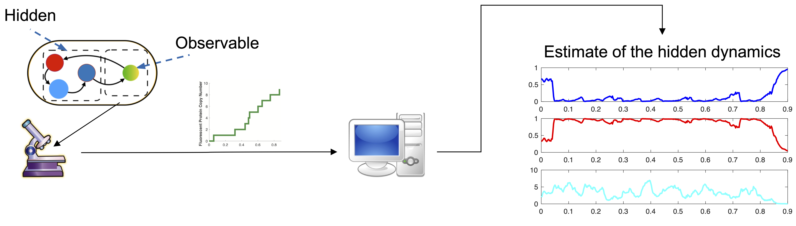

Filtering Algorithms for Stochastic Biochemical Reaction Networks Developed in the CTSB Lab, at ETH Zurich
Sponsored by SNSF under grant 182653.
This webpage lists several stochastic filtering algorithms developed in the CTSB (Control Theory and Systems Biology) Lab at ETH Zurich, for intracellular reaction systems. These works were sponsored by the SNSF (Swiss National Science Foundation) under the grant 182653. We sincerely appreciate the SNSF for its generous support and Swiss taxpayers for their invaluable contribution in advancing scientific research and development.
What is stochastic filtering for intracellular reaction processes
With modern time-lapse microscopes, scientists can measure the time trajectory of some intracellular species (e.g., fluorescent reporters) and use these measurements to investigate biological phenomena in living cells. Despite these successes, this technology can only measure a few species in the cell due to the limited availability of orthogonal fluorescent reporters, which poses a big challenge in understanding and regulating intracellular biological processes. To tackle this issue, scientists need to solve a stochastic filtering problem for intracellular reaction processes, i.e., to infer the dynamics of the hidden chemical species from the measured fluorescent readouts.
Project 1: Bootstrap particle filtering utilizing time-scale separation [Paper, Code]
A straightforward approach to this filtering problem is to use a particle filter where particles are generated by simulation of the full model and weighted according to observations. However, the exact simulation of the full dynamic model usually takes an impractical amount of computational time and prevents this type of particle filters from being used for real-time applications, such as transcription regulation networks. Inspired by the recent development of hybrid approximations to multiscale chemical reaction networks, we approach the filtering problem in an alternative way. We first prove that accurate solutions to the filtering problem can be constructed by solving the filtering problem for a reduced model that represents the dynamics as a hybrid process. The model reduction is based on exploiting the time-scale separations in the original network and, therefore, can greatly reduce the computational effort required to simulate the dynamics. As a result, we are able to develop efficient particle filters to solve the filtering problem for the original model by applying particle filters to the reduced model. We illustrate the accuracy and the computational efficiency of our approach using several numerical examples.
Z. Fang, A. Gupta, and M. Khammash. "Stochastic filtering for multiscale stochastic reaction networks based on hybrid approximations." Journal of Computational Physics 467 (2022): 111441.
GitHub: https://github.com/ZhouFang92/Particle-filters-for-multi-scale-CRNs-v.1
Project 2: Regularized particle filtering algorithms [Paper, Code]
Usually, the model parameters need to be inferred simultaneously with state variables, and a conventional particle filter can fail to solve this problem accurately due to sample degeneracy. In this case, the regularized particle filter (RPF) is preferred to the conventional ones, as the RPF can mitigate sample degeneracy by perturbing particles with artificial noise. However, the artificial noise introduces an additional bias to the estimate, and, thus, it is questionable whether the RPF can provide reliable results for SRNs. In this paper, we aim to identify conditions under which the RPF converges to the exact filter in the filtering problem determined by a bimolecular network. First, we establish computationally efficient RPFs for SRNs on different scales using different dynamical models, including the continuous-time Markov process, tau-leaping model, and piecewise deterministic process. Then, by parameter sensitivity analyses, we show that the established RPFs converge to the exact filters if all reactions leading to an increase of the molecular population have linearly growing propensities and some other mild conditions are satisfied simultaneously. This ensures the performance of the RPF for a large class of SRNs, and several numerical examples are presented to illustrate our results.
Z. Fang, A. Gupta, and M. Khammash. "Convergence of regularized particle filters for stochastic reaction networks." SIAM Journal on Numerical Analysis, 2023
GitHub: https://github.com/ZhouFang92/Regularized-particle-filter-for-stochastic-reaction-networks
Project 3: Finite state projection method for continuous-time noise-free observations [Paper, Code]
Here we develop a finite-dimensional filter for estimating the conditional distribution of the hidden (unobserved) species given continuous-time and noise-free observations of some species (e.g. a fluorescent reporter). It was proposed that in this setting, the conditional distribution evolves in time according to a large or potentially infinite-dimensional system of coupled ordinary differential equations with jumps, known as the filtering equation. We first formally verify the validity of this filtering equation under the non-explosivity condition and then develop a Finite-State Projection method, which provides an approximate solution by truncating the infinite-dimensional system. Additionally, we give computable error bounds for the algorithm. Finally, we present several numerical examples to illustrate our method and compare its performance with an existing particle filtering method for estimating the conditional distribution.
E. S. D’Ambrosio, Z. Fang, A. Gupta, M. Khammash, “Filtered finite state projection method for the analysis and estimation of stochastic biochemical reaction networks", bioRxiv.
GitHub: https://github.com/EleSofi/FFSP_project
Project 4: Divide-and-conquer approach [Paper, Code1, Code2]
Central to the analysis and inference of intracellular reaction systems is solving the Chemical Master Equation (CME), which characterizes the probability evolution of the randomly evolving copy-numbers of the reacting species. While conventional methods such as Monte-Carlo simulations and finite state projections exist for estimating CME solutions, they suffer from the curse of dimensionality, significantly decreasing their efficacy for high-dimensional systems. Here, we propose a new computational method that resolves this issue through a novel divide-and-conquer approach. Our method divides the system into a leader system and several conditionally independent follower subsystems. The solution of the CME is then constructed by combining Monte Carlo estimation for the leader system with stochastic filtering procedures for the follower subsystems. We develop an optimized system decomposition, which ensures the low-dimensionality of the sub-problems, thereby allowing for improved scalability with increasing system dimension. The efficiency and accuracy of the method are demonstrated through several biologically relevant examples in high-dimensional estimation and inference problems. We demonstrate that our method can successfully identify a yeast transcription system at the single-cell resolution, leveraging mRNA time-course microscopy data, allowing us to rigorously examine the heterogeneity in rate parameters among isogenic cells cultured under identical conditions. Furthermore, we validate this finding using a novel noise decomposition technique introduced in this study. This technique exploits experimental time-course data to quantify intrinsic and extrinsic noise components, without requiring supplementary components, such as dual-reporter systems.
Z. Fang, A. Gupta, S. Kumar, M. Khammash, Advanced methods for gene network identification and noise decomposition from single-cell data. Nat Commun 15, 4911 (2024).
GitHub: https://github.com/ZhouFang92/Rao-Blackwellized-CME-solver (for computing the CME only)
GitHub: https://github.com/ZhouFang92/Rao-Blackwell-method-for-cell-specific-model-identification (for model identification)